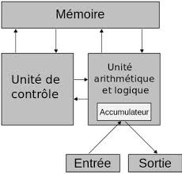

Comprendre l'Architecture de Von Neumann
L'architecture de von Neumann est un modèle révolutionnaire qui définit la structure des ordinateurs modernes. Découvrez comment ce concept visionnaire de 1945 continue d'influencer la technologie d'aujourd'hui.
Explorer le Fonctionnement

Principes Fondamentaux
Mémoire Unifiée
Programme et données stockés dans la même mémoire
Exécution Séquentielle
Traitement ordonné des instructions
Structure Modulaire
Unités spécialisées interconnectées
Bus Système
Communication centralisée entre composants